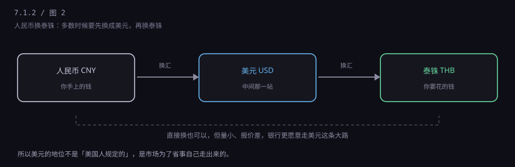
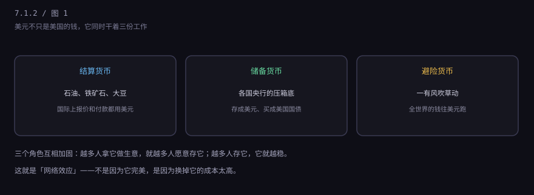
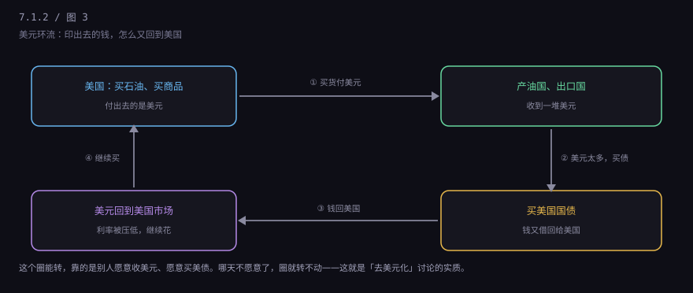
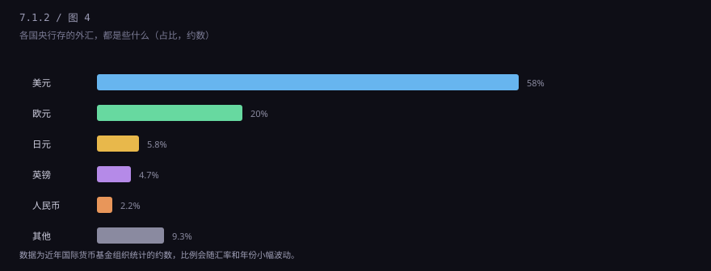

约 0.3 万字 · 4 张图 · 一张美国印的纸，为什么能买沙特的油、巴西的豆、中国的货
换个角度想这件事。你要去泰国玩，需要泰铢。理论上，人民币和泰铢之间可以直接换—— 中国的银行也确实挂得出这个价。但多数时候，银行会先把你的人民币换成美元， 再用美元去买泰铢。两笔交易，两次点差，你多付了一点手续费。

为什么？因为全世界的银行，手里都常备美元，不常备泰铢。 你要泰铢，它得临时去市场上买；而市场上泰铢的交易量小，买卖价差大。 美元不一样——几乎所有银行都持有美元，随时能给你。
这就是美元地位最朴素的一面：它是全世界银行柜台后面都备着的那一种货币。 不是因为它更值钱，是因为它更好用、随时能出手。
经济学家会把美元的地位拆成三层。不用记名词，记住三个场景就行。
第一份工作：给全世界的东西标价。 石油多少钱一桶？看布伦特或 WTI，报的是美元。铁矿石、大豆、铜、黄金，国际市场上基本都报美元。 你要买，就得先有美元。这叫结算货币。
第二份工作：给各国的家底压箱。 每个国家的央行都要存一些"关键时候能用"的资产，这叫外汇储备。 这些储备里，美元和美国国债占了大头。这叫储备货币。
第三份工作：出事时大家的避难所。 世界上哪儿一打仗、一危机，资金第一反应是往美元跑——买美元、买美债。 哪怕危机的源头就在美国，这个反应也常常一样（2020 年 3 月美股熔断时，美元指数反而大涨）。 这叫避险货币。

这三层是互相喂饭的关系。做生意都用它 → 大家手上都有它 → 存起来也放它 → 它最稳定 → 做生意更愿意用它。这个循环一旦转起来，就很难被外力打断。经济学上叫网络效应， 跟微信一样：不是微信比别的软件好多少，是你的朋友都在上面。
这段历史多数人听过一半就晕，其实只需要三句话。
第一句：二战结束时，美国太强了。 1945 年，美国的工业产值占全球将近一半，黄金储备占全球约三分之二。 别的国家打烂了，工厂、铁路、银行全在重建，只有美国能大量出货。 你要买东西，只能找它；找它，就得用它的钱。
第二句：于是大家坐下来定了个规矩。 1944 年，几十个国家的代表在美国一个叫布雷顿森林的地方开会，定下： 美元和黄金挂钩，35 美元换 1 盎司黄金；其他国家的货币和美元挂钩，汇率固定。 这套安排的意思很直白——你拿美元来，随时能换成黄金，所以你可以放心收美元。
第三句：这个承诺后来兑现不了了。 战后欧洲日本恢复，美国自己又打越战、搞福利，印了太多美元。 别人拿着美元来换黄金，美国的黄金越换越少。到 1971 年， 尼克松总统直接宣布：美元不再兑换黄金。这就是"关上了那扇窗"。
这件事在教科书里被说成"布雷顿森林体系崩溃"。但注意，崩溃的是"美元能换黄金"这个承诺， 不是美元的地位。1971 年之后，美元还是全世界最爱收的钱。
为什么？因为黄金换不了了，但美国货还能买，美国国债还能买。 你收了一堆美元，可以去买波音的飞机、英特尔芯片、美国的大豆， 也可以买美国国债吃点利息——那是一个又大又深、随时能进能出的市场。
打个比方：以前的美元是一张"随时能兑黄金的提货券"，1971 年之后， 它变成了一张"随时能换美国货和美国国债的提货券"。 提货券的含金量下降了，但全世界没有第二种提货券能覆盖这么多货、这么大的市场。 于是大家骂两句，接着用。
第一根柱子是石油。1974 年起，沙特等主要产油国卖油收美元， 卖油赚的钱再拿去买美国国债。这件事的影响是：任何国家想买石油，都得先有美元。 石油是工业的粮食，谁都要买，所以谁都得备美元。这叫"石油美元"。
第二根柱子是美债市场。美国国债规模以十万亿美元计， 全世界最大的债券市场，随时能买、随时能卖，价格透明。 你要存外汇，总得找个地方放；放在美债里，起码进出方便。
第三根柱子是习惯。银行报价用美元、贸易合同用美元、大宗商品用美元、 SWIFT 报文里大量是美元——这套管道铺了一百年，改造它要花钱、要时间、要所有人一起改。 单个国家想改，改了也没用。
有个问题一直让人不舒服：美国印钱买别人的东西，那别人拿着美元干什么？ 总不能一直放床底下。答案是：大部分又借回给美国了。

这个圈分四步：美国买东西，美元流出去；出口国收了一堆美元； 这些美元放在账上不生息，于是买美国国债；钱回到美国，压低了美国的利率；美国借钱更便宜，继续买。
这就是"美元特权"的实质：它可以印钱买东西，别人还得把收到的钱借回给它。 代价是美国的制造业慢慢空心化（东西都靠买），国债越滚越大。 所以这个特权也不是白拿的，是把双刃剑。
美元离你并不远。三个具体的传导路径：
一是油价。国际油价用美元标。美元升值（人民币贬值）， 同样一桶油，中国进口商要付更多人民币。国内的成品油调价窗口，背后就有这道换算。
二是海淘和进口货。你买的那罐进口奶粉、那台游戏机， 标价里含着汇率。人民币从 7.0 跌到 7.3，同样 100 美元的东西，你要多掏 30 块。
三是利率。美国加息，全球资金往美国跑，别的国家为了留住钱， 往往也得跟着收紧，房贷利率、企业贷款利率就上去了。这条链子很长， 但 2022 年那一轮全球加息，很多人都感受到了。
所以你不需要关心美联储主席是谁，但你得知道： 你手机里那个汇率数字，是全球资金流动的温度计。
"为什么不用别的？"这个问题问得很好。看一张表就明白了。

欧元是最接近的挑战者，但它有个致命短板：欧元区有统一的货币，没有统一的财政。 各国各发各的债，出了危机（2010 年希腊），谁兜底扯不清。投资者要的是"闭着眼睛也敢放钱"的地方， 欧洲给不了这份确定。
人民币这些年在往前走：跨境贸易可以用人民币结算，有自己的跨境支付系统（CIPS）， 跟几十个国家签了本币互换。但资本项目还没完全放开——钱进出境还有管理。 这对国内金融稳定是好事，对"让外国人放心长期持有人民币"是个约束。 这是一道选择题，不是一道落后的证明。
还有一点容易被忽略：当储备货币是有代价的。 你的钱要流出去，别人才能持有；要流出去，你就得常年贸易逆差或者对外投资。 美国承担了巨额逆差，也换来了这个地位。这不是白捡的便宜。
新闻里常出现这个词，容易误会成"要废掉美元"。实际发生的要温和得多。
真正在做的事有三类：一是双边本币结算，比如中国和巴西做生意， 直接用人民币和雷亚尔，绕开美元；二是把储备分散一点， 多存点黄金、多存点别的货币；三是建替代管道， 比如 CIPS、金砖国家的支付网络，避免被某一条通道卡住。
这些动作加起来，会让美元份额慢慢往下走，但短期内改不了大局。 因为储备货币这件事，靠的不是"谁更公平"，是"谁的市场更深、更稳、更好进出"。 这是个几十年的工程，不是一次会议能定的。
下一节讲人民币这一侧：为什么我们换汇有额度、为什么有"在岸"和"离岸"两个价、 央行为什么每天早上要发一个"中间价"。那是这套体系里最有意思的一段。